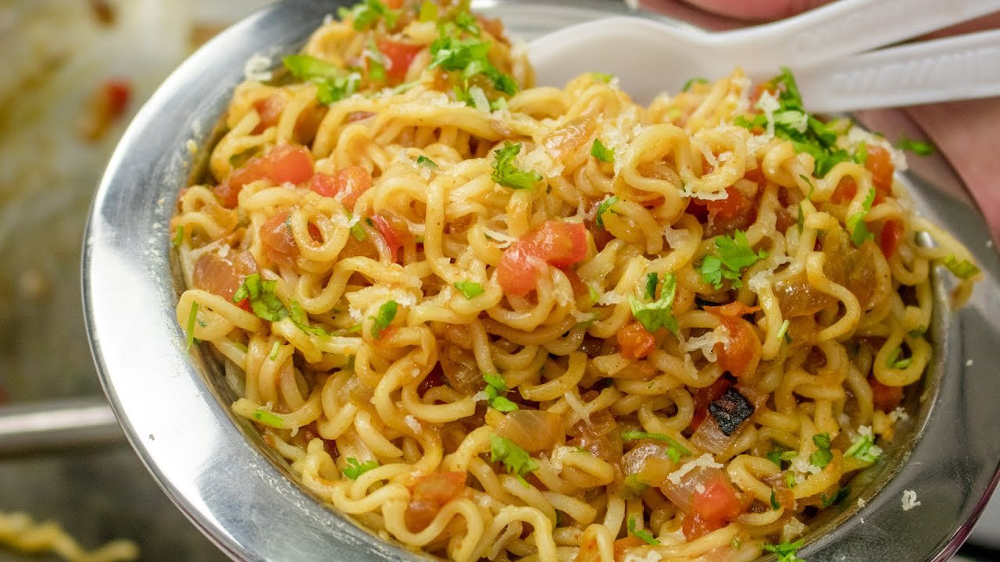

Home
Maggie

Description
Maggie is an instant noodle which is very popular in India because of its
affordability and quick preparation (usually 2 minutes). Maggi is often customized with
vegetables, spices, and sauces, making it a comforting snack or meal.
Ingredients
- Maggie
- Onion
- Ghee
- Green Chilli
- One extra maggie masala
- Regular spices
Steps
- Heat some ghee in a pan.
- Add onion,green chilli and extra maggie masala then saute it until aromatic.
- Pour in one cup of water and add the Maggi noodles. Let it cook until the noodles
are soft.
- Dissolve the maggie masala that comes with the packet in half cup of boiling
water.
- Finally, pour the prepared seasoning water over the cooked noodles
and mix well before serving.